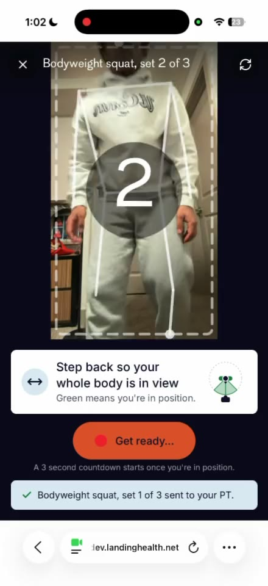
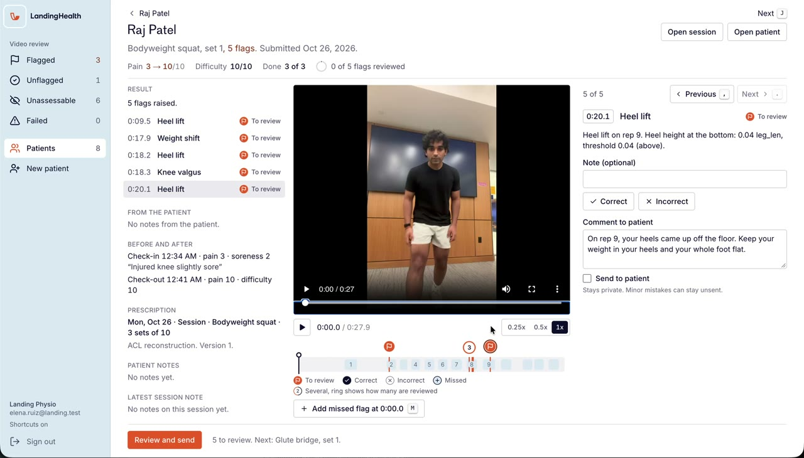
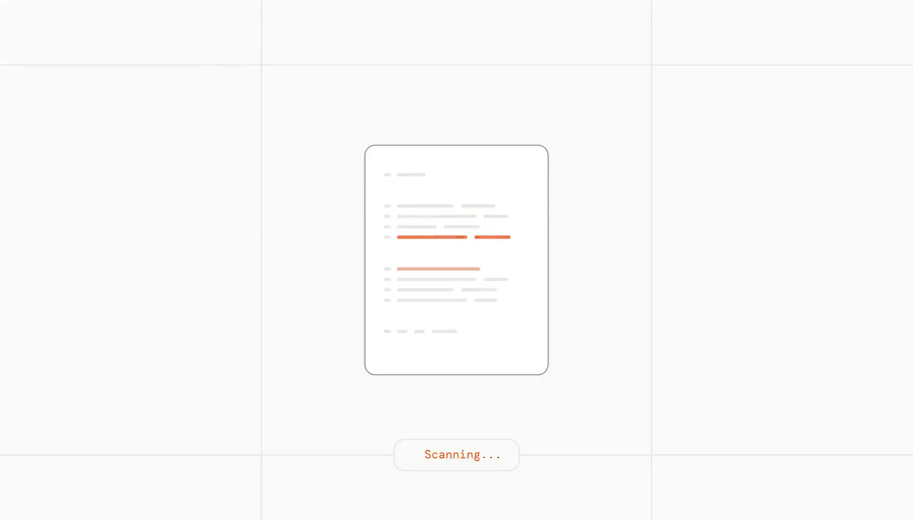

Landing is clinic software for physical therapy. Patients submit home exercises, PTs review what needs attention, and the next visit starts with more context.

1 · At home
Patients film each set with a phone or laptop browser. Nothing is sent until they choose Send.

2 · In your review queue
Landing flags videos with possible form issues, so you watch the clips that matter and approve every change.

3 · Before the visit
A brief pulls together recent sessions, notes, and what’s still missing, so you’re ready when the patient walks in.
Landing runs alongside your EHR, and setup takes three steps. We do the first one for you. See it with a sample patient in a demo.
getlandinghealth.com